Anime Scenes
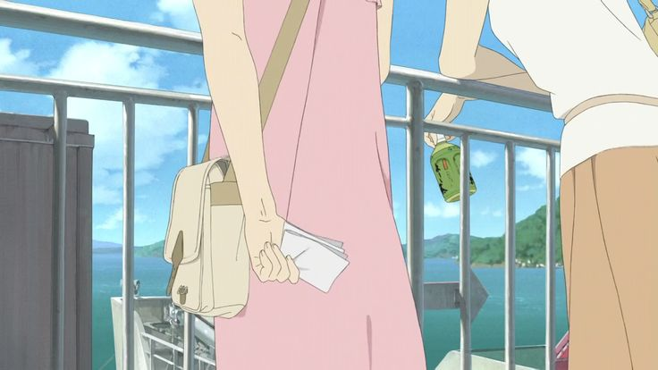
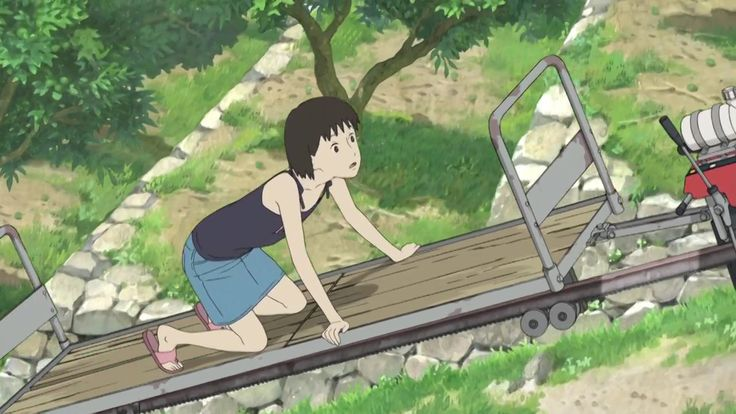
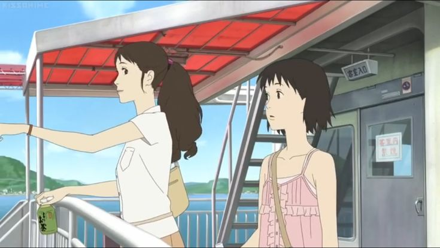
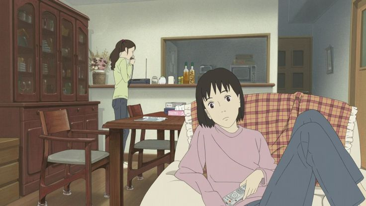
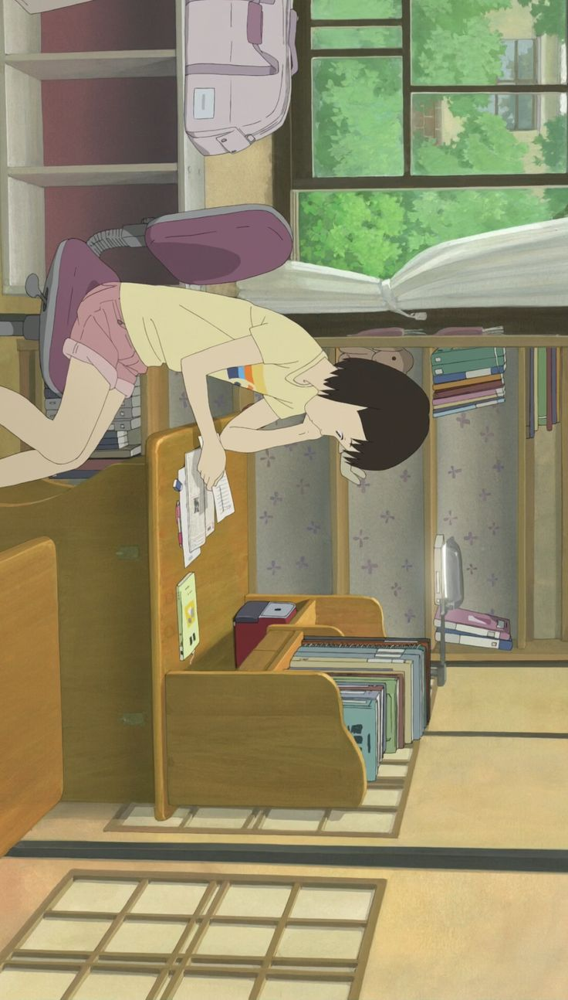
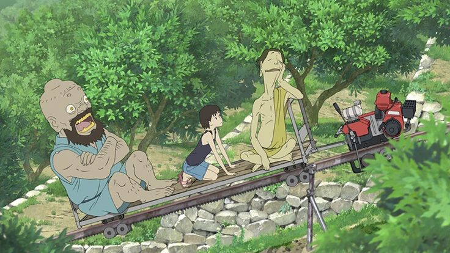
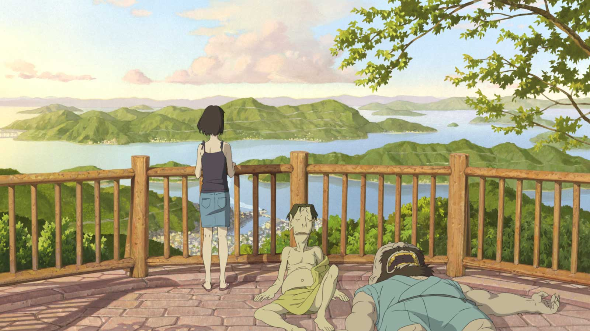
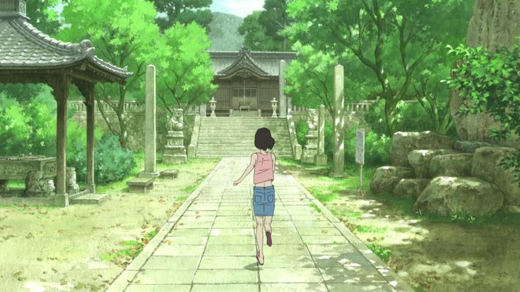
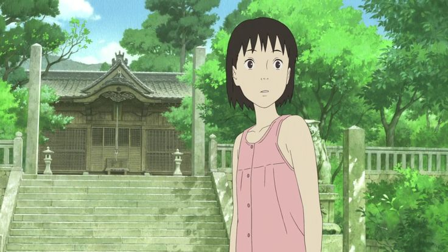
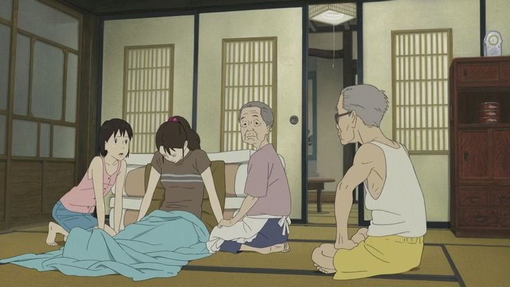
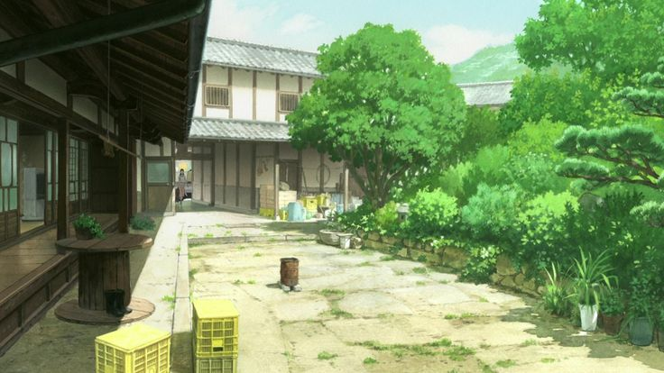
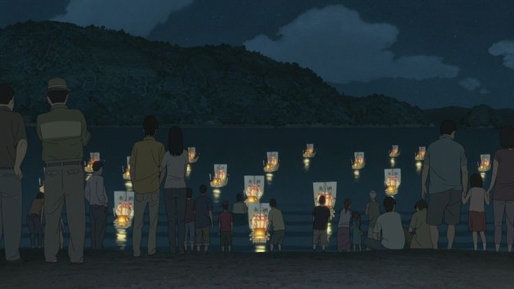
“A letter that was never finished, a heart that was never closed.”
Anime Studio: Production I.G
Director: Hiroyuki Okiura
Producer: Arimasa Okada
Distributor: Kadokawa Pictures
Rating: ★ 7.2 / 10
Source: Original Story
Release Date: April 21, 2012
Duration: 2 hours
Music by: Mina Kubota
Genres: Drama, Fantasy, Family
Country: Japan
Language: Japanese
Box Office: ~$6.7 million
Awards: Best Feature Film (NYICFF)